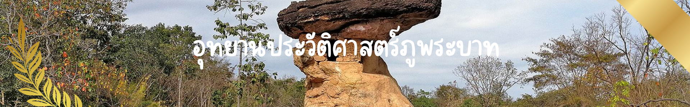
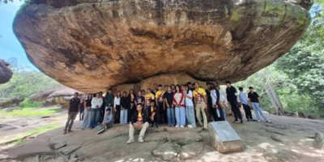
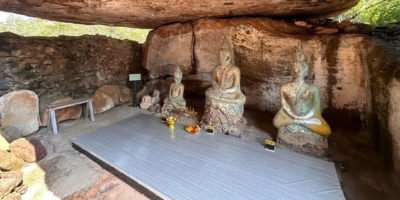

หน้าแรก ‚
พิพิธภัณฑบ้านเชียง ‚
ทะเลบัวแดง ‚
อุทยานประวัติศาสตร์ภูพระบาท ‚
วัดป่าภูก้อน ‚
วัดป่าคำชะโนด


❮
❯
อุทยานประวัติศาสตร์ภูพระบาท เป็นอุทยานประวัติศาสตร์แห่งหนึ่งของประเทศไทยภายใต้การดูแลของกรมศิลปากร กระทรวงวัฒนธรรม ตั้งอยู่บริเวณเชิงเขาภูพาน ครอบคลุมพื้นที่ 3,430 ไร่ ในเขตป่าสงวนแห่งชาติที่มีชื่อว่าป่าเขือน้ำ ท้องที่บ้านติ้ว ตำบลเมืองพาน อำเภอบ้านผือ จังหวัดอุดรธานี อยู่ห่างจากตัวจังหวัดเป็นระยะทางประมาณ 67 กิโลเมตร
เมื่อวันที่ 27 กรกฎาคม พ.ศ. 2567 ยูเนสโกได้ขึ้นทะเบียนอุทยานประวัติศาสตร์ภูพระบาทและแหล่งวัฒนธรรมสีมาวัดพระพุทธบาทบัวบานเป็นแหล่งมรดกโลกทางวัฒนธรรมโดยใช้ชื่อว่า ภูพระบาท ประจักษ์พยานแห่งวัฒนธรรมสีมาสมัยทวารวดี (อังกฤษ: Phu Phrabat, a testimony to the Sīma stone tradition of the Dvaravati period) ในการประชุมคณะกรรมการมรดกโลกสมัยสามัญ ครั้งที่ 46 ณ กรุงนิวเดลี ประเทศอินเดีย
ข้อมูลการติดต่อ
ที่อยู่:
ตำบลเมืองพาน อำเภอบ้านผือ จังหวัดอุดรธานี 41160
โทรศัพท์:
042-219-837
วันและเวลาทำการ:
เปิดทุกวัน เวลา 08.30–16.30 น.
ค่าเข้าชม:
ชาวไทย 20 บาท, ชาวต่างชาติ 120 บาท
Facebook:
https://www.facebook.com/phuphrabathistoricalpark